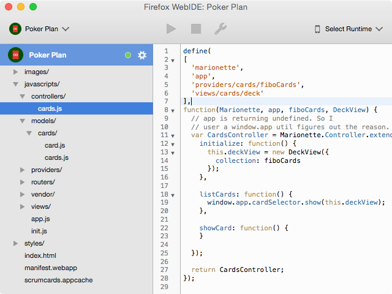

FirefoxOS
Introducción al desarrollo y herramientas
FirefoxOS
En la misión de Mozilla
Nuestro objetivo es marcar la diferencia, no obtener beneficios. Cuando eliges Firefox OS, estás contribuyendo en la construcción de un futuro mejor para Internet y sus usuarios en todo el mundo.
Objetivo
Las Open Webapps deben basarse en estandares para funcionar en todos los dispositivos y browsers del mercado y no volver a fragmentar la web.
Open? Web? Apps?
Aplicaciones, que normalmente se instalan desde un store (appstore, playstore, marketplace, etc) y que se pueden instalar independientemente en un dispositivo (pc, tablet, telefono) puediendo hacer uso de los recursos del mismo (llamadas, gps, contactos, etc.)
Ventajas
- Construidas sobre estandares. Sin atarnos a una plataforma.
- Pensadas para funcionar offline.
- Pueden acceder a recursos de hardware.
- Facilmente distribuibles.

FirefoxOS
Spoiler Alert: Se basa en OWA
Apps desarrolladas con tecnologias web. Pueden ser instaladas por el usuario, son independientes y pueden ser diseñadas para funcionar offline.
Instaladas por el usuario
{
"name": "Tabu",
"description": "¡Juga al clásico juego de Tabu con tus amigos!",
"version": "1.1.1",
"launch_path": "../index.html",
"fullscreen": "true",
"icons": {
"60": "/img/tabu-icon.png",
"128": "/img/tabu-icon-128.png"
},
"developer": {
"name": "Tehsis",
"url": "http://tehsis.com.ar"
},
"default_locale": "es"
}
Alojadas/empaquetdas - Privilegiadas - Certificadas
Son independientes
Cada app funciona en un sandbox
- Poseen sus propios permisos.
- Sus propias cookies/storage.
- Aunque carguen el mismo sitio, son origines distintos.
Devices API
Conjunto de APIs que nos permite acceder al hardware y/o recursos de los dispositivos.
Veamos algunas
API de vibración
// Vibrar por un segundo (o mil milesimas)
window.navigator.vibrate(1000);
// Hagamos bailar nuestro telefono
window.navigator.vibrate([200, 100, 200]);
API de bateria
// Podemos saber el nivel de bateria del dispositivo
console.log(window.navigator.battery.level)
// O saber si esta enchufado
consoe.log(window.navigator.charging);
Actualmente poseo de bateria
API de notificaciones
var notifButton = document.getElementById('notification-example');
notifButton.addEventListener('click', function() {
new Notification('Meetup de FirefoxOS!', {
icon: './img/Untitled.png',
body: '¡!'
});
});
API de Luz ambiental
window.addEventListener('devicelight', function(event) {
if (event.value < 50) {
console.log("Esta oscuro");
} else {
console.log("Esta clarito");
}
});
¡Que lindo se ve!
EjemploY muchas más...
- Geolocalización
- Bluetooth
- Próximidad
- Orientación
- Contactos
- Etc ...
De las que hablaremos en los próximos meetups...
Herramientas
WebIDE
Entorno de edición para crear aplicaciones para FFOS.
Cordova/Phonegap
¿No resuelve el
mismo problema?
- Proyecto unificado para trabajar multiplataforma.
- Nos permite usar Devices APIs incluso cuando no estan soportadas.
- Una buena solución hasta que las OWA sean realidad.
Conclusiones
Y reflexiones final
¡Gracias!
¿Preguntas?